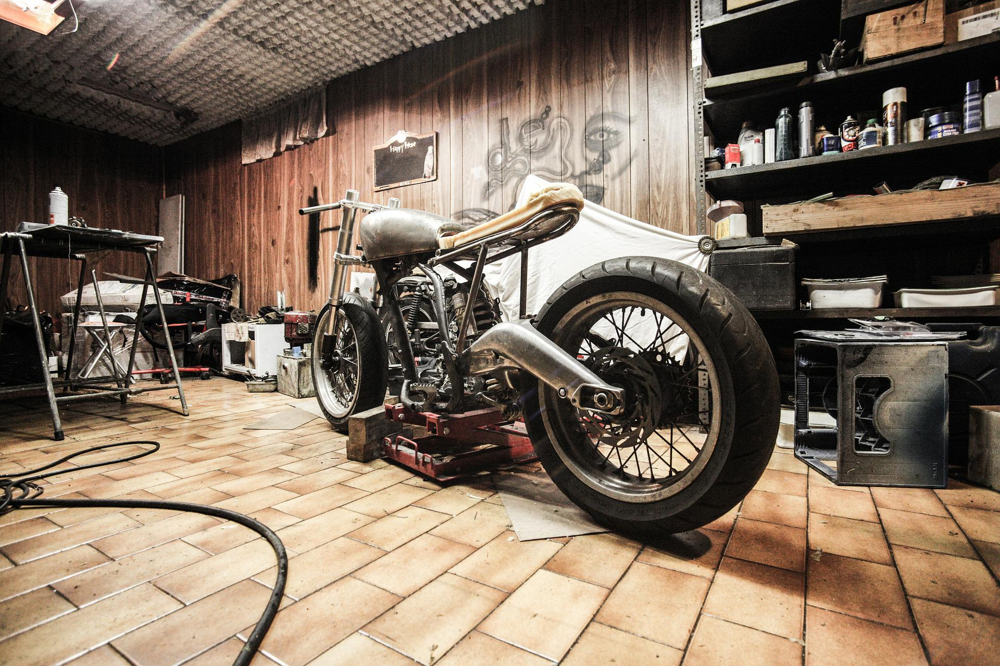

Ein Motorrad ist ein Spass erregender, schneller Verkehrsmittel. Wie auch für alle Verkehrsmittel, müssen diese gewartet werden um den normalen Gebrauch zu sichern. Ein Motorrad ist häufig einfacher zu warten als ein Auto. Am Anfang füllt man sich vielleicht etwas faul und man möchte den Motorrad wegen jeder Kleinigkeit zum Service beim Verkäufer bringen, jedoch führt dies schnell zu einem leeren Portmonnaie. Deswegen gibt es hier einige Grundlegende Servicevorgänge, die selbst in die Hand genommen werden kann.

Erstens, regelmässige Reinigung. Die Allermeisten kenn dieses schon, jedoch ist es ein sehr wichtiger Teil der Wartung. Zweitens, Kettenreinigung. Mindestens ein Mal pro Monat oder nach einem regnerischen Tag, sollte die Kette gereinigt sowie eingefettet werden. Und allerletztens, der Reifendruck. Viele Anfänger verstehen nicht wie wichtig ihre Reifen sind und sie vernachlässigen den Reifendruck. VERGISST NIEMALS EURE REIFEN ZU PUMPEN!